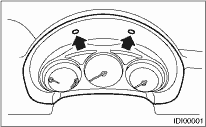
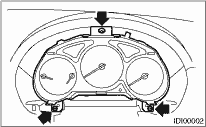

INSTRUMENTATION/DRIVER INFO > Combination Meter
1. Disconnect the ground cable from the battery.
2. Set the tilt steering at the lowest position.
3. Remove the screws and detach the meter visor.

4. Remove the screws of combination meter and pull out the meter.

5. Disconnect the connector in the upper area of combination meter to remove the meter.
CAUTION:
• Be careful not to damage the meter or instrument panel.
• Be careful not to damage the meter glass.